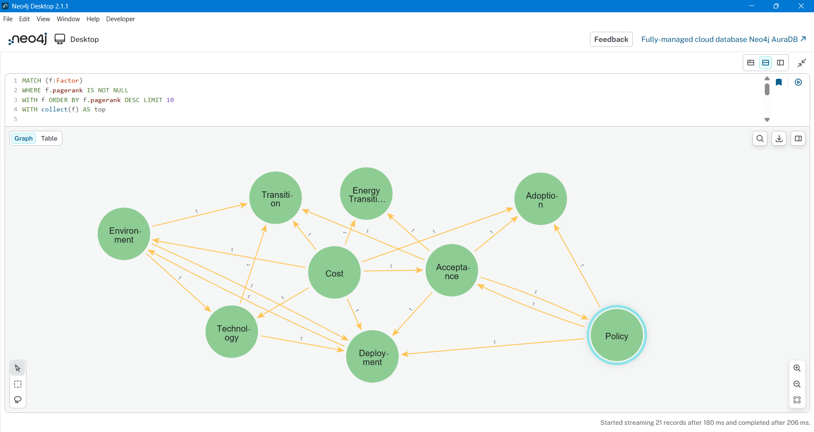
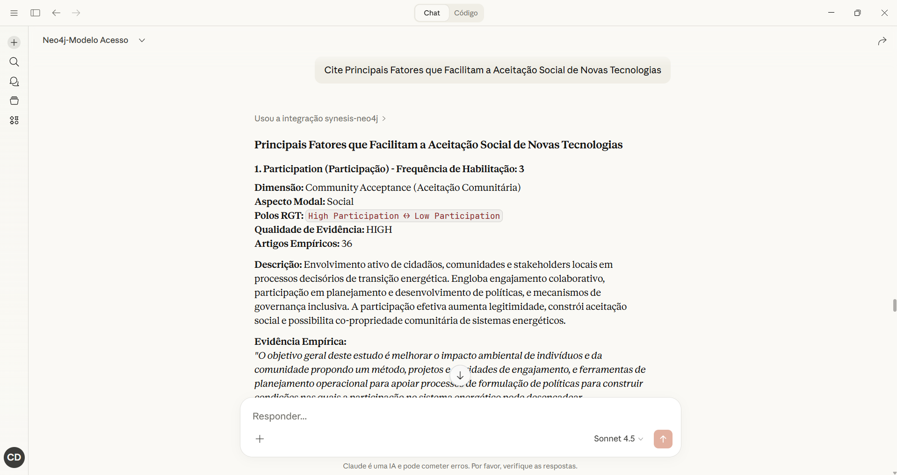
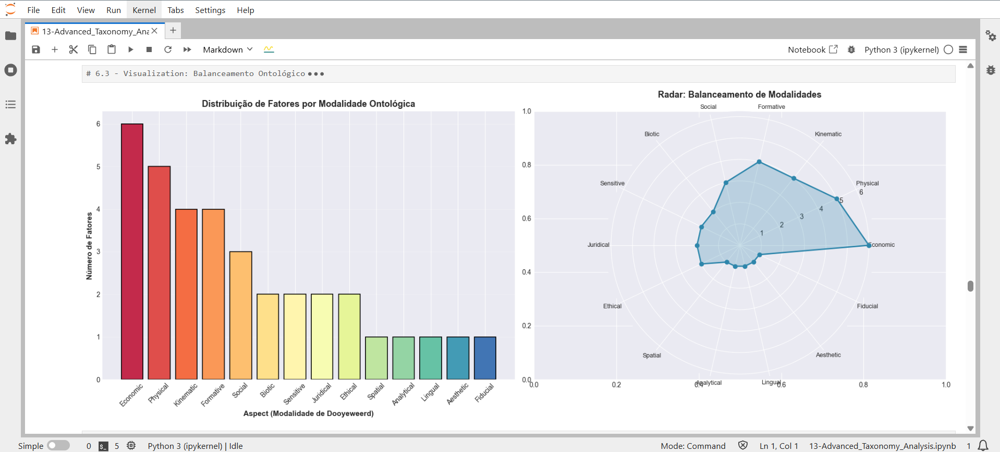
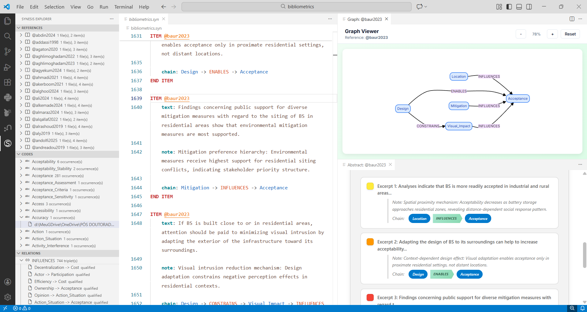
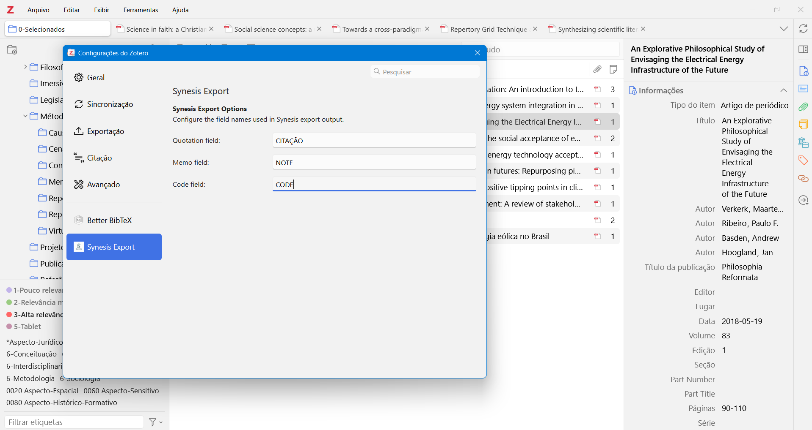
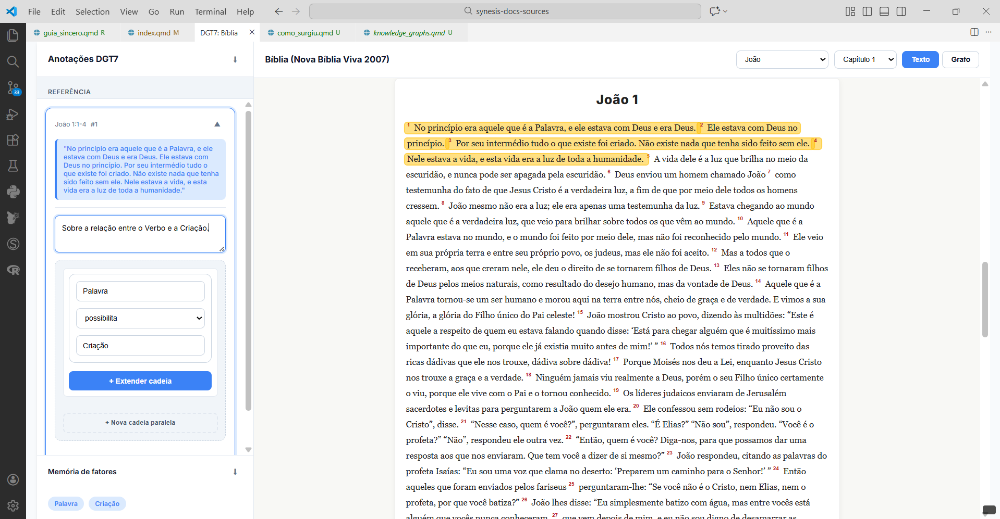

Synesis
Linguagem para consolidação de conhecimento
1 Bem-vindo à linguagem Synesis
O conhecimento humano é naturalmente intrincado, repleto de nuances e conexões profundas. Essa complexidade é valiosa, mas a complicação surge quando nos faltam métodos adequados para organizar esses saberes. A Synesis é uma linguagem de domínio específico (DSL) declarativa, criada para quem busca mais do que simples anotações: ela proporciona métodos de consolidação de conhecimento.
Synesis atua como um compilador para o pensamento analítico. Ela recebe interpretações e anotações em arquivos de texto puro, valida sua consistência lógica e as transforma em estruturas canônicas e rigorosas, organizadas conforme os objetivos específicos pré-definidos pelo usuário.
Ao delegar a organização lógica para uma estrutura canônica, a Synesis demonstra que a disciplina é uma forma de liberdade. Com a estrutura assegurada, a mente permanece livre para o que realmente importa: interpretação, nuance e insight. Isso é possível devido ao seu nível de abstração, que estabelece princípios estruturais mínimos — fontes, recortes significativos e organização conceitual.
Essa base garante alto grau de flexibilidade, permitindo sua aplicação em metodologias consagradas ou em abordagens criadas sob medida.
1.1 Estrutura Fundamental
Para ilustrar, consideremos o conhecimento registrado em livros, artigos, páginas da web, entrevistas ou registros de análises. Toda essa informação pode ser estruturada em três blocos fundamentais:
Fontes (Bloco 1): A origem da informação. Pode ser um artigo científico, um site, uma entrevista ou uma ideia original registrada em seu caderno.
Itens (Bloco 2): O recorte significativo extraído da fonte. É o equivalente ao destaque com marca-texto em um livro. As anotações de margem, palavras-chave ou códigos atribuídos a esses trechos traduzem seu sentido aplicado e facilitam a recuperação temática da informação.
Ontologia (Bloco 3): O modo como os itens são organizados em domínios conceituais. Na Ciência da Computação, o termo refere-se à categorização formal de dados em conjuntos de conhecimento. Essa estrutura pode evoluir ao longo do tempo: pode iniciar simples e fluida, estimulando descoberta e criatividade, ou tornar-se mais estável, garantindo rigor e consistência.
1.2 Flexibilidade e Maturação
Em síntese, o conhecimento é organizado em grupos que contêm trechos relevantes (itens), identificados por códigos, palavras-chave, e extraídos de referências (fontes). Synesis permite estruturar e reestruturar essas anotações continuamente. À medida que o conhecimento amadurece, sua ontologia pode ser refinada, expandida ou reorganizada, sem comprometer a integridade estrutural do conjunto.
Esta abordagem abrange desde conhecimentos tácitos externalizados em texto, hipóteses e ideias provisórias até análises consolidadas. É possível adicionar aos itens comentários, registros temporais, versionamento e relações semânticas explícitas, fortalecendo a rastreabilidade e a coerência conceitual.
1.3 Aplicabilidade
O mesmo princípio aplica-se tanto a contextos cotidianos — como um bloco de anotações na mesa de trabalho (Fonte) com notas destacáveis (Itens) organizadas por prioridade ou data (Ontologia) — quanto a fluxos complexos de pesquisa acadêmica, envolvendo artigos científicos, teses e documentação técnica.
Synesis não é apenas um sistema de organização, mas uma infraestrutura de tradução do conhecimento. Ela converte estruturas conceituais em formatos interoperáveis — de planilhas e documentos tradicionais (Excel, MS-Word) a notebooks analíticos (Jupyter Labs), formatos padronizados (REFI-QDA) e bancos de grafos (Neo4j, Memgraph) — tornando o conhecimento mensurável, consultável e semanticamente navegável, inclusive por Large Language Models (LLMs) via MCP.
1.4 O que você precisa hoje?
1.4.1 Aprender Synesis
Você é novo aqui? Comece com nossos tutoriais hands-on que te guiarão passo a passo.
- Guia para Pesquisadores — Introdução para pesquisa qualitativa
- Tutorial Synesis Explorer — Configurar o ambiente VSCode
1.4.2 Resolver um problema específico
Você sabe o que quer fazer? Veja nossos guias práticos para tarefas comuns.
- Guia para Profissionais — Aplicar Synesis em contextos organizacionais
- Exportar para Neo4j — Criar knowledge graphs
1.4.3 Consultar especificações técnicas
Você precisa de detalhes técnicos? Acesse a referência completa da linguagem e API.
- Referência da Linguagem — Sintaxe completa Synesis v1.1
- API Synesis — Integração Python (
synesis.load())
1.4.4 Entender conceitos
Você quer entender o “porquê”? Leia nossas explicações sobre filosofia e arquitetura.
- Por Que Estrutura Importa — Reflexão sobre rigor e liberdade
- Por que não Excel? — Quando Synesis faz sentido (e quando não faz)
- Knowledge Graphs & GraphRAG — Por que grafos transformam pesquisa qualitativa
- Synesis para pesquisa teológica - Como utilizar Synesis em pesquisa teológica
- Roadmap & Ideias — Futuro da linguagem
1.5 Como funciona
A arquitetura Synesis é modular e inteiramente baseada em texto plano, garantindo portabilidade, rastreabilidade, versionamento nativo e um ambiente livre de distrações.
Todo o sistema é orquestrado por um arquivo de projeto (.synp), que atua como ponto de coordenação e conecta seus principais componentes:
Referências Bibliográficas (.bib): Reúnem e estruturam formalmente as fontes originais que fundamentam o conhecimento.
@Artile{doe2026
author = {Doe, John},
journal = {Knowledge Management},
title = {Exploring knowledge annotation systems}
year = {2026}
number = {7}
volume = {1}
}Templates Estruturais (.synt): O núcleo normativo da linguagem. É o arquivo de template que define formalmente a estrutura das anotações (.syn) e das ontologias (.syno). Nele são fixados os formatos, os campos obrigatórios, os tipos de relacionamento e as regras declarativas que moldam todo o corpo de conhecimento. Totalmente configurável, o template determina como a ontologia será organizada e como as anotações deverão ser estruturadas. Assim como os demais componentes, também é um arquivo de texto plano.
# ============================================
# CAMPOS DE ITEM
# ============================================
ITEM FIELDS
REQUIRED text
REQUIRED BUNDLE note, chain
END ITEM FIELDS
FIELD text TYPE QUOTATION
SCOPE ITEM
DESCRIPTION Excerto textual extraído da fonte bibliográfica
END FIELD
FIELD note TYPE MEMO
SCOPE ITEM
DESCRIPTION Memo analítico explicando a interpretação e mecanismo causal identificado
END FIELDAnotações (.syn): Composto por registros analíticos estruturados conforme o template. Apresentam-se como textos organizados em blocos formais, seguindo as regras declaradas.
ITEM @doe2026
text: This study aims to assess the impacts of these transition plans on social equity in a case study of the southern coast of Iran, where the community faces severe water scarcity and there is ready access to seawater for desalination.
note: Water scarcity creates necessary condition for desalination adoption, enabling transition pathway evaluation
chain: Water_Scarcity -> ENABLES -> Desalination
END ITEM
ITEM @doe2026
text: The main contribution of this research is to consider social equity as a key factor in the nexus evaluation of energy-water transition plans.
note: Positions equity as essential evaluation criterion, constraining acceptable transition configurations
chain: Equity -> CONSTRAINS -> Transition_Planning
END ITEMOntologia (.syno): Contém estruturas conceituais igualmente definidas pelo template. Embora se apresentem como blocos estruturados, sua forma e lógica derivam integralmente das declarações estabelecidas no arquivo .synt.
ONTOLOGY Cost
topic: Economics
aspect: 11 Economic Aspect
dimension: 2 Market Dimension
confidence: HIGH
reasoning: Aspect 11: Core economic factor representing financial expenditure. Mainly constrains deployment/technology development while enabling market penetration when reduced. Co-occurs with Deployment and Acceptance, indicating market-consumer relevance. Dimension 2: Directly affects investors, consumers, and market competitiveness. High frequency (96) across broad sources (66) confirms central role.
description: Economic factor representing financial expenditure associated with energy technologies and systems. Acts as primary barrier constraining technology development, site selection, and deployment when high, while enabling market penetration, technology transition, and sustainable solutions when reduced. Influences willingness to pay, acceptance, and market competitiveness. Critical determinant of renewable energy portfolio choices and infrastructure optimization decisions.
rgt_element_a: Low_Cost
rgt_element_b: High_Cost
theoretical_significance: 3
END ONTOLOGYEnquanto os arquivos de anotação e ontologia se assemelham a textos estruturados em blocos, é no arquivo de template que Synesis verdadeiramente se manifesta como linguagem. Por meio de comandos declarativos, o arquivo .synt define a gramática estrutural que governa todo o corpora, transformando um conjunto de textos em um corpo de conhecimento formalmente organizado.
1.5.1 O Poder da Integração
O resultado da compilação Synesis vai muito além de documentos estruturados. O compilador converte seu corpo de conhecimento em formatos universais de intercâmbio — como JSON, Excel, DOCX, CSV e REFI-QDA — tornando-o interoperável com outras stacks tecnológicas.
Mais do que exportar dados, Synesis transforma conhecimento estruturado em infraestrutura computacional.
1.5.1.1 Graph Databases
Integração nativa com Neo4j e Memgraph, permitindo materializar a topologia conceitual do seu conhecimento em grafos navegáveis, consultáveis e visualmente exploráveis.

1.5.1.2 AI-Ready
Por meio do protocolo MCP (Model Context Protocol), seus dados podem ser conectados a assistentes como Claude Desktop, viabilizando interações em linguagem natural com respostas rastreáveis e fundamentadas diretamente em bancos de grafos Neo4j/Memgraph — sua fonte formal de verdade.

1.5.1.3 Data Science
Geração de datasets estruturados prontos para análises estatísticas em R, exploração computacional em Python ou visualizações interativas em Jupyter Lab.

1.5.1.4 Extensão para VS Code (LSP)
Através de um Language Server Protocol (LSP), o editor reconhece a sintaxe Synesis e realiza validações em tempo real. O ambiente oferece navegação estruturada, inspeção de vínculos e visualizações gráficas básicas para apoio analítico.

1.5.1.5 Plugin para Zotero
Permite exportar bibliografias e anotações destacadas diretamente para o formato Synesis, integrando pesquisa acadêmica ao fluxo de compilação.

1.5.1.6 Bible Coder
Extensão VSCode para codificação exegética do texto bíblico completo, com suporte a relações semânticas em cadeia (ex: Palavra → POSSIBILITA → Criação). Destacamentos do texto canônico podem ser agregados via compilador com anotações de corpus clássicos, filosóficos ou patrísticos, gerando grafos integrados de redes conceituais.

1.6 A Origem do Nome
Do grego σύνεσις (sýnesis):
Etimologia: de συνίημι (syníēmi) — “reunir”, “compreender”, “fazer convergir” — acrescido do sufixo nominal -σις (-sis), que indica ação ou processo.
Significados clássicos: 1. Confluência; união; convergência. 2. Entendimento; discernimento; inteligência. 3. Consciência refletida.
O sentido original combina dois movimentos inseparáveis: reunir e compreender.
Synesis, enquanto linguagem, materializa exatamente esse princípio — a convergência de fragmentos de informação em um todo inteligível, auditável e formalmente estruturado.
Synesis: a confluência da informação em inteligência.